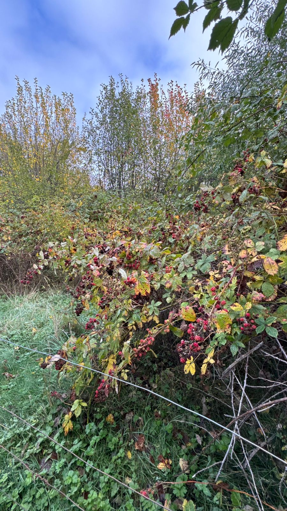
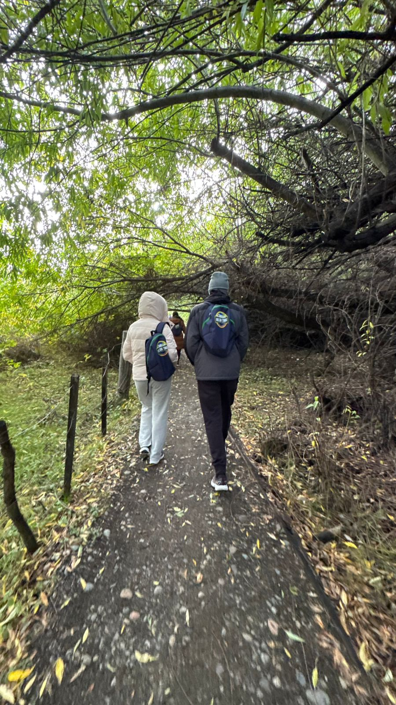

El Lago Puelo es uno de los lugares más hermosos de la Comarca Andina. Se caracteriza por sus montañas, bosques y paisajes naturales. Durante la visita realizamos caminatas y observamos increíbles vistas de la naturaleza.
| Actividad | Descripción |
|---|---|
| Caminatas | Recorridos por senderos y bosques |
| Paisajes | Observación de montañas y naturaleza |

